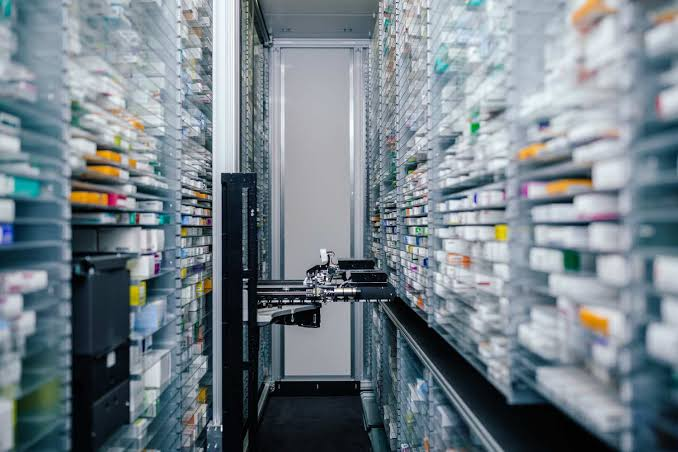
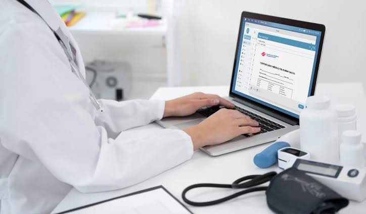
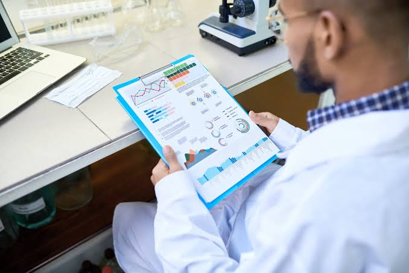
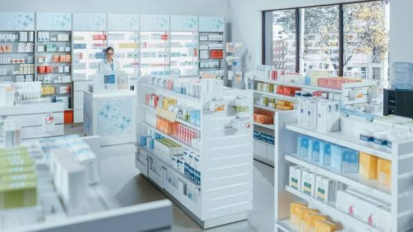
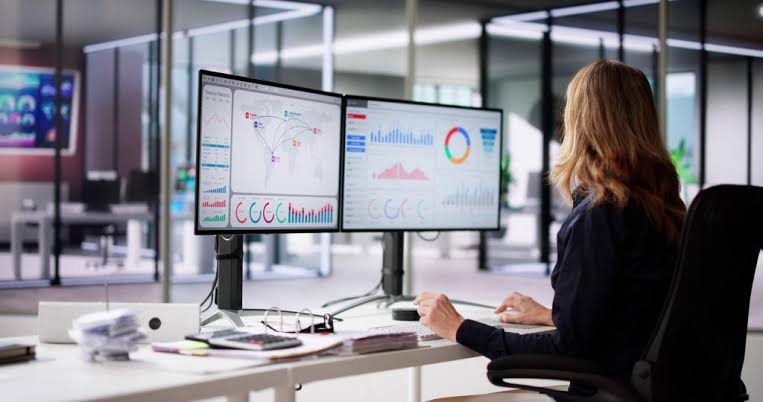
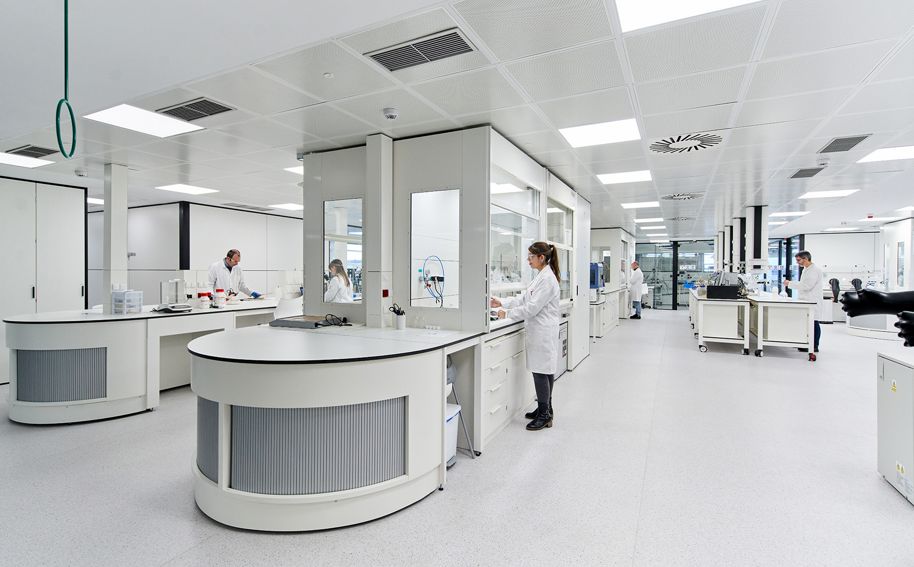
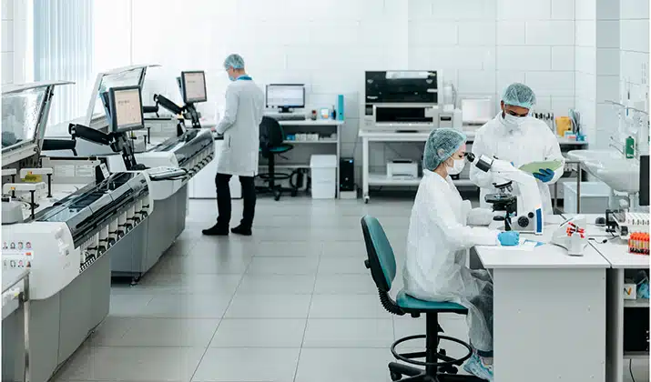
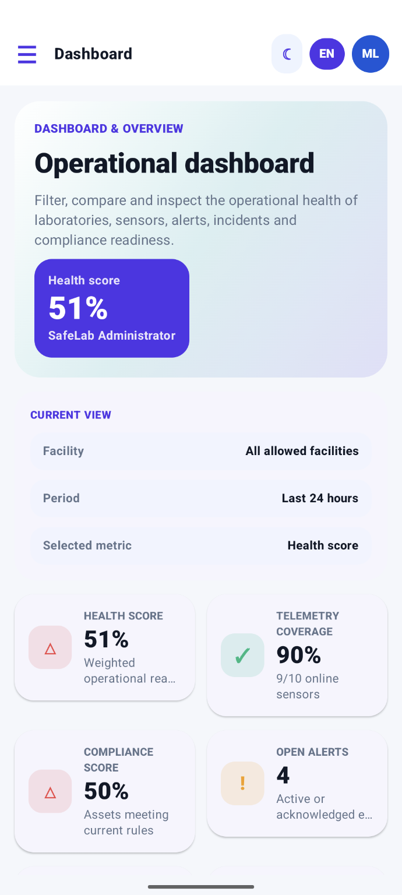
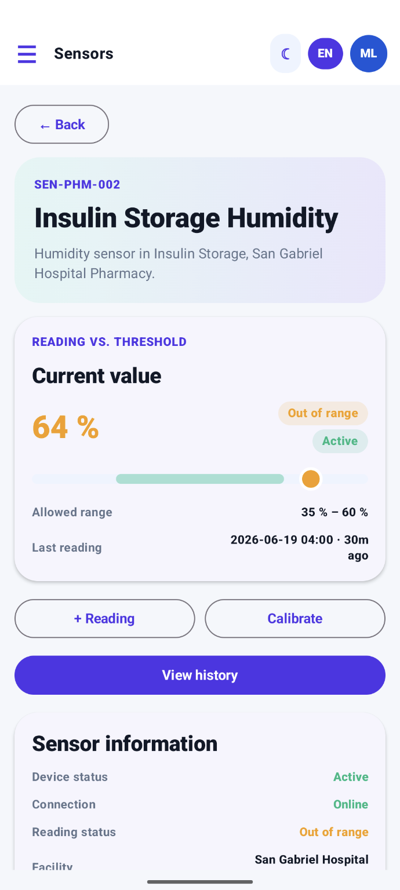
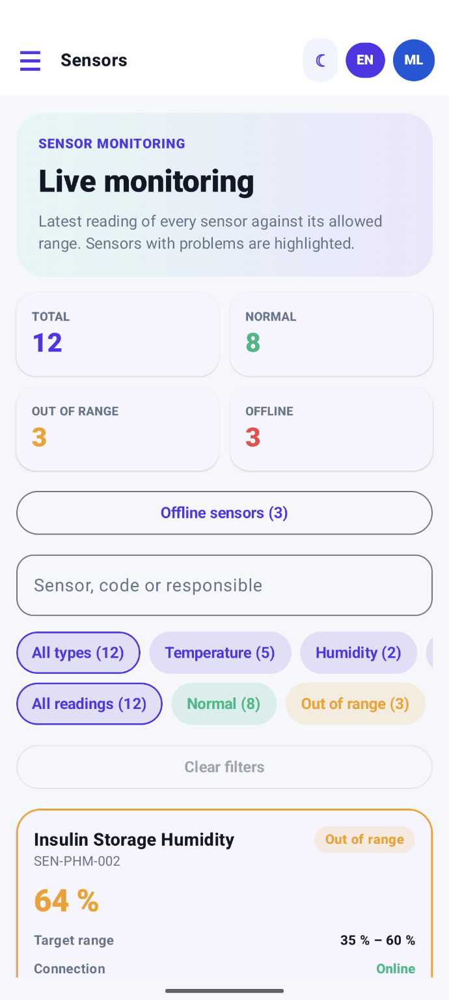

SMART COLD CHAIN MONITORING
24/7
Continuous environmental monitoring
8
Core operational modules
3
Critical asset categories protected
Protect every sample, reagent and vaccine.
SafeLab centralizes cold-chain monitoring for laboratories, hospitals and pharmacy networks, helping teams detect environmental risks early and keep critical assets traceable from one operational view.
LIVE MONITORING
Cold-chain overview
Temperature, humidity, equipment status and threshold deviations in one operational view.
Protected inventory
Samples · Reagents · Vaccines
EARLY ALERTS
Respond before conditions escalate
Surface critical deviations quickly so teams can act before inventory or compliance is affected.
Benefits
Visible value for laboratories and healthcare operations.
The platform is built around traceability, risk prevention and operational efficiency, helping healthcare teams replace manual control with continuous monitoring and reliable data.

Clinical safety protection
Protect critical materials by detecting temperature risks before they compromise diagnostic reliability or patient safety.
24/7 remote visibility
Monitor storage conditions, equipment state and thermal deviations continuously from a centralized dashboard.
Early incident response
Configurable alerts help teams react before a cold chain failure turns into lost stock or regulatory exposure.

Less manual documentation
Reduce hours spent on paper logs and repetitive supervision so specialists can focus on higher-value clinical work.

Audit-ready traceability
Maintain historical, structured and exportable records that support inspections, audits and quality controls.
Scalable SaaS adoption
Deploy a modern web platform that fits resource-constrained institutions without complex local infrastructure.
SERVICES
Solutions designed for clinical cold chain operations.
SafeLab supports laboratories, hospitals and pharmacy networks with modular monitoring, alerting and reporting capabilities.
Clinical laboratories
- Continuous environmental monitoring
- Threshold-based alerts
- Digital traceability records
- Less manual temperature logging

SEGMENT 02Hospitals and clinical pharmacies
- Multi-equipment centralized dashboard
- Multi-location visibility
- Audit-ready traceability support
- Faster response to failures

CORE PLATFORMSafeLab monitoring platform
- Integrated sensor-based data flow
- Audit-ready historical records
- Guided onboarding experience
- Scalable SaaS architecture
PLANS
Flexible plans for each healthcare organization.
Starter Lab
$29/month
For small laboratories that need reliable monitoring for critical storage units.
- Up to 10 monitored devices
- Threshold-based alerts
- Monthly compliance reports
- Email support

Most popularProfessional
$79/month
For hospitals and pharmacy areas that require broader visibility and faster operational response.
- Multi-location visibility
- Real-time dashboard
- Multi-user access
- Priority support

ScaleEnterprise
$Custom/month
For networks that need larger deployments, advanced analytics and custom integrations.
- Unlimited monitored devices
- Advanced analytics
- Regulatory export workflows
- API and custom integration support
About Product
SafeLab is the digital infrastructure behind a safer clinical cold chain.
SafeLab combines connected sensors, a centralized dashboard and a mobile app with an alert engine, replacing intermittent manual supervision with continuous, predictive monitoring. It is designed to preserve biological inventory and support regulatory compliance.
- Real-time environmental monitoring
- Configurable preventive alerts
- Automated compliance reports
- Historical traceability and audit trail
- Equipment maintenance management
- Mobile app for laboratory staff
24/7
Continuous monitoring
Instant
Preventive alerts
Web + Mobile
Access anywhere



About Team
The startup behind SafeLab.
MediTrack Startup is a five-person team building SafeLab, a monitoring system for the artifacts and supplies used in laboratories.
What we solve
We address a critical operational vulnerability: uncertainty and inefficiency in the storage of sensitive biological materials such as reagents, vaccines and samples.
Our mission
Empower healthcare personnel with automated monitoring, early alerts and reliable records, so they can focus on analysis and patient care instead of repetitive manual documentation.
Our vision
Become the regional standard for intelligent biological inventory management, promoting zero-waste operations and pragmatic innovation in healthcare institutions.
Ever Giusephi Carlos Lavado
Mobile & Frontend Developer
Leads the mobile app architecture and the operational dashboard that gives teams a clear overview.
Victor Manuel Espino Rossi
Mobile Developer & Localization
Builds site organization and equipment maintenance features, and makes SafeLab available in English and Spanish.
Braden Raid Garcia Cerpa
Mobile & Web Developer
Develops alerts, incident tracking and the audit trail that keeps every event traceable.
Valeria Alexandra Rojas Gómez
Mobile & Frontend Developer
Creates the reporting and compliance features that turn monitoring data into audit-ready evidence.
Oscar Fernando Vara Velásquez
Mobile & Frontend Developer
Develops real-time sensor monitoring, from live readings to thresholds and calibration history.
- 5Members
- Agile / ScrumWay of working
- GitFlowVersion control
- Web + Mobile + BackendProduct scope
Testimonials
What laboratory and pharmacy teams expect from SafeLab.
LC
Laboratory coordinator
Hospital clinical laboratory“We check fridges and freezers by hand three times per shift. Receiving an alert on the phone when a door stays open at night would protect the reagents we lose today.”
QM
Quality manager
Pharmaceutical company“Every week we download dataloggers and consolidate Excel files for audits. An immutable record with exportable reports would save us hours and avoid regulatory findings.”
PT
Pharmacy technician
Hospital pharmacy“Problems are usually discovered when the damage is already done. Seeing temperature and humidity in real time would let us act before a batch is lost.”
LA
Logistics assistant
Pharmaceutical warehouse“I would like to see every storage zone from one place and get a warning when a value is getting close to the limit, not only when it is already exceeded.”
FAQ
Questions healthcare visitors may ask first.
What is SafeLab?
SafeLab is a B2B SaaS platform for automated environmental monitoring, preventive alerts and traceability in laboratories, hospitals and pharmacy networks.
Who is the solution designed for?
It is designed for laboratory coordinators, pharmacy technicians, quality managers and healthcare institutions responsible for sensitive biological inventory.
How does SafeLab notify my team about a deviation?
When a reading leaves the allowed range, SafeLab generates an alert in the mobile application with the equipment, the recorded value and the time, so the responsible staff can confirm and attend it.
Can I configure the limits for each equipment?
Yes. Each monitored equipment can have its own temperature and humidity limits, and alerts are generated when those limits are exceeded.
Does the platform help with audits and compliance?
Yes. SafeLab is intended to support audit processes through automated reporting and persistent historical records that improve traceability.
CONTACT
Let’s talk about safer cold chain operations.
Emailcontact@safelab.io
Phone+51 999 999 999
LocationLima, Peru